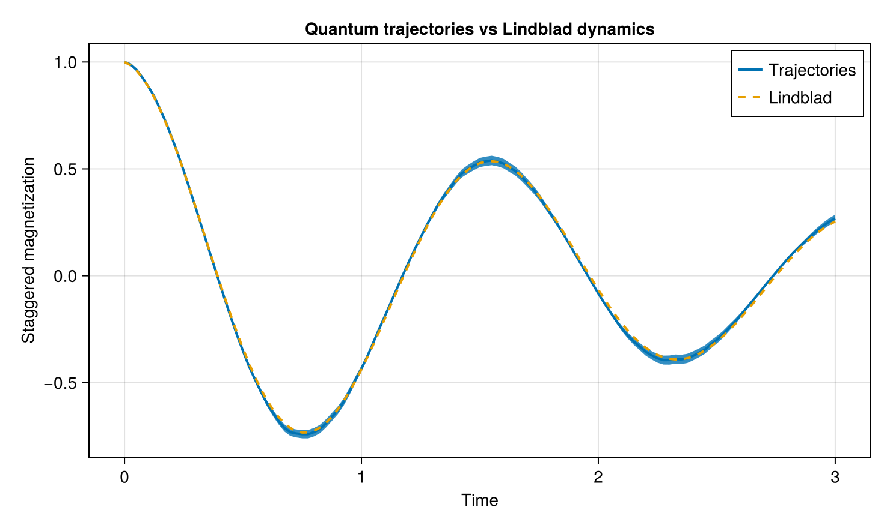

Quantum Trajectories vs Lindblad Dynamics
The Lindblad master equation and the quantum-trajectory method are two complementary descriptions of the same Markovian open quantum dynamics.
The Lindblad equation evolves the density matrix deterministically,
\[\frac{d\rho}{dt} = -i[H,\rho] + \sum_i \left( L_i\rho L_i^\dagger - \frac{1}{2} \left\{ L_i^\dagger L_i,\rho \right\} \right),\]
whereas the trajectory method evolves stochastic wavefunctions and estimates observables by averaging over many realizations.
For sufficiently many trajectories, the ensemble average approaches the Lindblad prediction.
In this example we compare both approaches for a dissipative two-spin XXZ system.
Model
We use nearest-neighbor XXZ interactions,
\[H = J_{xy} \left( \sigma_1^+\sigma_2^- + \sigma_1^-\sigma_2^+ \right) + J_z \sigma_1^z\sigma_2^z,\]
together with local spontaneous emission,
\[L_i = \sqrt{\gamma}\,\sigma_i^-.\]
using OpenSpinDynamics
using SparseArrays
using Random
using CairoMakie
N = 2
γ = 0.4
coupling = NearestNeighborCoupling(
0.0,
N,
)
model = SpinModel(
N;
Jxy=1.0,
Jz=0.5,
coupling=coupling,
)
ops = spin_operators(N)Initial state
We start from the Néel state
\[|\psi_0\rangle = |\uparrow\downarrow\rangle.\]
The Lindblad solver requires a density matrix, while the trajectory solver evolves the wavefunction directly.
ψ0 = neel_state(
N;
direction=:z,
)
ρ0 = sparse(ψ0 * ψ0')
lindblad_ops = [
sqrt(γ) * ops.minus[i]
for i in 1:N
]Observable
We monitor the staggered magnetization
\[M_s = \frac{1}{N} \sum_{i=1}^{N} (-1)^{i-1}\sigma_i^z.\]
Mstag = sum(
(-1)^(i - 1) * ops.z[i]
for i in 1:N
) / N
times = collect(
range(0.0, 3.0; length=121)
)Lindblad reference
First we compute the deterministic master-equation result using the exponential propagator.
lindblad_result = evolve(
model,
ρ0,
times,
[Mstag];
method=:expm,
lindblad_ops=lindblad_ops,
)Quantum trajectories
We now estimate the same observable using stochastic quantum trajectories.
For reproducible documentation output, the random-number generator is seeded before the trajectory calculation.
Random.seed!(1234)
num_samples = 500
trajectory_mean, trajectory_std = evolve(
model,
ψ0,
times,
[Mstag];
method=:trajectories,
lindblad_ops=lindblad_ops,
num_samples=num_samples,
)
trajectory_stderr =
trajectory_std[:, 1] ./ sqrt(num_samples)The trajectory solver returns both the ensemble mean and the sample standard deviation. The quantity plotted below is the standard error of the mean,
\[\mathrm{SEM}(t) = \frac{\sigma(t)}{\sqrt{N_{\mathrm{traj}}}}.\]
Comparison
fig = Figure(size=(740, 440))
ax = Axis(
fig[1, 1];
xlabel="Time",
ylabel="Staggered magnetization",
title="Quantum trajectories vs Lindblad dynamics",
)
band!(
ax,
times,
trajectory_mean[:, 1] .- trajectory_stderr,
trajectory_mean[:, 1] .+ trajectory_stderr,
)
lines!(
ax,
times,
trajectory_mean[:, 1];
label="Trajectories",
linewidth=2,
)
lines!(
ax,
times,
lindblad_result[:, 1];
label="Lindblad",
linestyle=:dash,
linewidth=2,
)
axislegend(ax)
fig
The stochastic trajectory average follows the deterministic Lindblad evolution, while the uncertainty band reflects finite-sampling noise.
Increasing num_samples reduces the statistical uncertainty approximately as
\[1/\sqrt{N_{\mathrm{traj}}}.\]
This comparison illustrates the relationship between density-matrix evolution and the Monte Carlo wavefunction picture implemented by OpenSpinDynamics.jl.